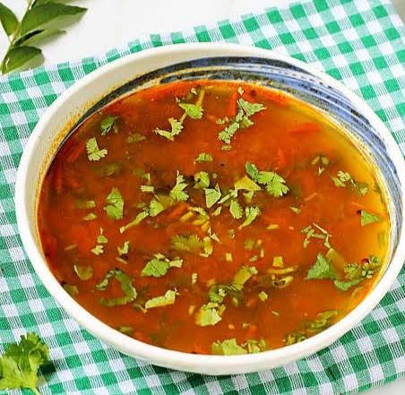
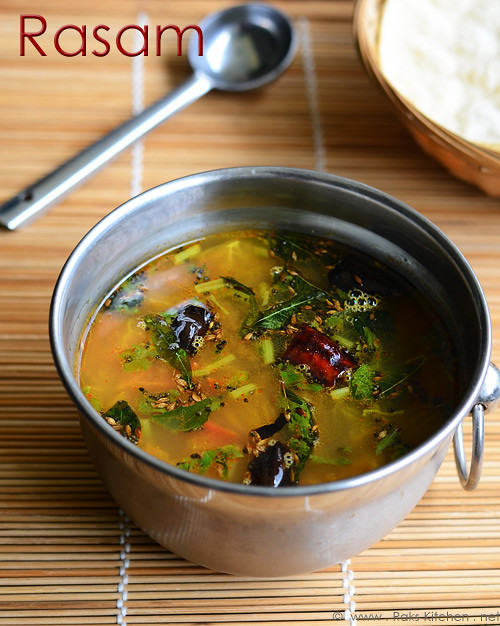

South Indian Recipes
South Indian RecipesBreakfast
Rice items
Sambars and Curry
Sweets
Snacks
 Rasam, a quintessential South Indian dish, holds a special place in the culinary landscape of the region. With its roots deeply embedded in the rich tapestry of South Indian cuisine, rasam has evolved over centuries, becoming not just a soup but a cultural and gastronomic icon. The history of rasam can be traced back to ancient times when Ayurvedic principles played a crucial role in shaping culinary practices. Rasam was originally conceived as a medicinal soup, incorporating ingredients like tamarind, pepper, cumin, and other spices known for their health benefits. Over time, it transitioned from a therapeutic concoction to a beloved everyday dish, reflecting the cultural fusion that defines South Indian cooking. Rasam's taste is a symphony of flavors, striking a delicate balance between tangy, spicy, and aromatic notes. Tamarind lends its distinctive sourness, while black pepper provides a gentle heat. The aromatic blend of mustard seeds, cumin, and curry leaves adds depth and complexity to the flavor profile. The use of asafoetida, garlic, and other spices contributes to rasam's unique and invigorating taste. One of the remarkable aspects of rasam is its versatility. It can be served as a soup, accompanied by rice, or even consumed on its own. Rasam is not only a comfort food but also a remedy for ailments, owing to its inherent therapeutic properties. It is known for its digestive benefits and is often prescribed during illnesses to soothe the senses and boost immunity.
